|
UNA EXPERIENCIA DE
HIBERNACI�N EN NEVERA
Mar�a Jos� Navarro, 2006
INDICE
1. INTRODUCCI�N.
1.1 Decisiones.
1.2 Ventajas e inconvenientes de la
hibernaci�n en nevera.
2. MATERIALES E INSTRUMENTOS
2.1 La nevera
2.2 Termostato.
2.3 Term�metro con sonda de cable
2.4 Termohigr�metro
2.5 Recipiente para la tortuga
2.6 Acumulador de fr�o
2.7 Tubos de pl�stico.
2.8 Bomba de aireaci�n.
2.9 Programador para la bomba de aireaci�n.
2.10 Substrato.
3. PROCEDIMIENTO
3.1 Desinfecci�n y/o esterilizaci�n
3.2 Procedimiento de calibrado y conexi�n del
termostato.
3.3 Aireaci�n de la nevera.
3.4 Preparativos del animal.
3.5 Introducci�n de la tortuga en la nevera.
3.6 Controles semanales durante el proceso.
3.7 Salida de la hibernaci�n.
4. CONCLUSIONES.
5. BIBLIOGRAF�A.
Agradecimientos
1. INTRODUCCI�N.
La hibernaci�n es un proceso natural en numerosas especies de tortugas
que viven en regiones de clima templado, donde durante el invierno, el
calor del sol no proporciona las condiciones que los animales
necesitan para mantenerse activos. Estas especies han perfeccionado
durante milenios una adaptaci�n de sus organismos para entrar en un
letargo que les permite ralentizar su metabolismo y sobrevivir hasta
que el calor del sol en la primavera los activa de nuevo.
En muchas especies de tortugas, como por ejemplo, en las
mediterr�neas, la hibernaci�n es necesaria para el �xito de la
reproducci�n. Adem�s es una de las variables que, en la cr�a en
cautividad, ayudan a un crecimiento m�s naturalmente regulado y
contribuyen a evitar la piramidizaci�n debida a la sobrealimentaci�n,
que es una de las causas, entre otras muchas (falta de humedad, dieta
inapropiada por ratio muy baja de Ca/P o con demasiado contenido en
prote�nas, falta de calcio, d�ficit de radiaci�n UVB, etc) que produce
esta patolog�a.
1.1. Decisiones.
Fer es un peque�o machito de testudo hermanni hermanni de 14 meses. El
a�o pasado no hibern�, as� que este a�o va a ser su primera
experiencia de hibernaci�n �y tambi�n la m�a!.
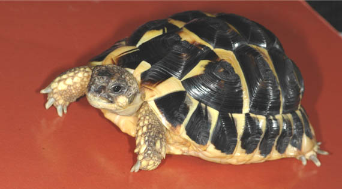
Fer (Mar�a-Jos� Navarro).
Aunque Fer vive en un terrario con una l�mpara PowerSun�
en una habitaci�n
calefactada y su temperatura nunca baja de 20�C, su instinto presiente
el invierno y pasa m�s tiempo dentro de su cueva-refugio.
Este a�o ha comido mucho una dieta de calidad, con alto contenido de
plantas silvestres, fibra y calcio. Ha tomado el sol, correteado por
el c�sped. Est� desparasitado y con una salud perfecta. Por lo que hay
ciertas garant�as de que podr� afrontar con �xito su primer sue�o
invernal.
Me he decidido por una hibernaci�n cortita de 6 semanas en nevera.
Este procedimiento ha sido usado con �xito por numerosos criadores
ingleses y alemanes, donde el clima tampoco permite una hibernaci�n
natural. Como se�ala Highfield (2002) �En regiones donde el control de
la temperatura es problem�tico, deber�a considerarse realizar la
hibernaci�n en una habitaci�n refrigerada. Los refrigeradores
dom�sticos grandes (no congeladores) tambi�n pueden modificarse para
este fin� (p. 54). Ha sido descrito con detalle por Highfield en dos
videos del Tortoise Trust. Y tambi�n ha sido de mucha utilidad la
experiencia de nuestro compa�ero Josep Vicen� que la puso en marcha
con pleno �xito el pasado a�o con sus mediterr�neas.
Las razones para elegir el m�todo de la nevera vienen motivadas por
las condiciones ambientales. Vivo en un piso en una ciudad con
inviernos muy fr�os, en los que son normales temperaturas nocturnas de
�8�/�10�C mantenidas durante semanas, por lo que se descarta la
hibernaci�n en el exterior. Y en mi vivienda, la calefacci�n central
est� regulada para mantener los 23-24�C diurnos y 20�C nocturnos. Con
lo que no es posible obtener los par�metros que permitan la
hibernaci�n de las tortugas. La soluci�n es proporcionar
artificialmente unas condiciones m�s o menos estables en torno a los 5�C
y eso, en mi caso, s�lo es posible en una nevera.
1.2 Ventajas e inconvenientes de la hibernaci�n en nevera.
La hibernaci�n en la naturaleza no es un proceso constante y fijo en
cuanto a temperatura. Unos d�as hace m�s fr�o y otros, menos. De
manera que los animales se entierran de manera refleja a m�s o menos
profundidad, salen y entran de sus refugios, incluso comen y siguen
escondidos.
Los inconvenientes que tiene la hibernaci�n en nevera son: 1) La
artificialidad del proceso, dado que hay que inducir la hibernaci�n,
controlando y manipulando la luz y la temperatura. 2) El cuidado
minucioso que hay que tener con la desinfecci�n de la nevera y el
sustrato porque, como sabemos, dentro de ella se dan las condiciones
adecuadas para la proliferaci�n de hongos. 3) El control de todos los
par�metros de temperatura, humedad y ventilaci�n.
Las ventajas son: 1) Proporcionar unas condiciones controladas de
hibernaci�n en cuanto a temperatura, humedad y duraci�n de la misma.
2) La seguridad de estar a salvo de posibles depredadores. 3) La
facilidad para seguir el proceso y para revisar al animal durante su
sue�o.
2. MATERIALES E INSTRUMENTOS
2.1 La nevera
He usado una neverita peque�a, de las que se usan en los minibares de
los hoteles. Marca LG� (Modelo LG GC-051 SNS) y que cuesta alrededor de
200 euros.
Vistas de la nevera (Mar�a-Jos� Navarro).
La
nevera tiene dos espacios disponibles: el suelo y una bandeja en el
centro. El suelo tiene muy poco fondo porque entre el compresor y el
contenedor de botellas de la puerta, deja s�lo 13 cm de fondo libres y
38 de longitud. La bandeja del centro tiene todo el fondo (29 cm),
pero el inconveniente es que est� cerca del mini congelador y que la
altura de la bandeja al congelador es s�lo de 13 cm. Esa bandeja se
puede quitar, pero hasta esa altura, el fondo sigue siendo poco
profundo. Desde el suelo al congelador hay 30 cm si quitamos la
bandeja.
En estas dimensiones no hay mucho donde elegir. La verdad es que la
nevera me ha decepcionado un poco, porque entre el compresor y el
botellero deja poco espacio disponible. El a�o pr�ximo intentar� hacer
algunos ajustes, como desmontar el soporte del botellero para tener
algo m�s de espacio al cerrar la puerta.
Quiz� sean m�s adecuadas las neveritas sin congelador de las que
proporcionan a los bares algunas marcas comerciales de refrescos y que
tienen la puerta transparente y sin botellero. Aunque, por otra parte,
estas �ltimas tambi�n tendr�an inconvenientes, ya que consumir�an m�s
electricidad porque el vidrio no es muy buen aislante.
A una nevera de este tama�o, se le podr�a dar doble utilidad,
hibernaci�n de babies en invierno, e incubadora de huevos en el
verano.
2.2
Termostato.
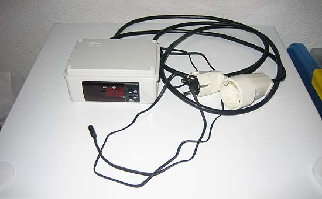
Termostato externo AKO�, Modelo 14123 (Mar�a-Jos� Navarro).
Se
necesita un termostato para aire acondicionado o similar, que permita
funci�n inversa, conectando la nevera cuando la temperatura sube de
cierto valor. Es decir, que tenga la opci�n de trabajar con circuito
de fr�o, a la inversa de lo normal. He elegido un termostato tipo on/off,
o sea, encendido y apagado, en lugar de uno de los de tipo
proporcional, que lo que hacen es administrar la potencia del elemento
calefactor/regrigerante.
Necesitamos un termostato/term�metro digital de precisi�n de un grado
y con sonda de cable. Para hibernaci�n no hacen falta decimales ni
tanta precisi�n como para incubaci�n. Si no se encuentra uno con sonda
separada, sino s�lo del tipo pared, se podr�a meter entero dentro de
la nevera, sacando el cable el�ctrico que active y desactive la
nevera. Pero si es con sonda mejor, as� se puede ajustar desde fuera.
El que he usado es de la marca AKO�, Modelo 14123.
El termostato se puede dejar encima de la nevera o fijarlo en la pared
para tenerlo seguro y que no se caiga accidentalmente. S�lo hay que
poner el termostato interno de la nevera al m�ximo, para que no se
apague nunca, y ajustar en el termostato externo la temperatura de
conexi�n-desconexi�n que se quiera. Ya se encargar� este �ltimo de
tener el control de la nevera y de enchufarla o no. Obviamente hay que
hacer pruebas unos d�as antes.
2.3 Term�metro con sonda de cable
He usado otro term�metro con sonda de cable, para enterrarla en el
sustrato al lado del animal. Marca TFA�, modelo 30.1012.
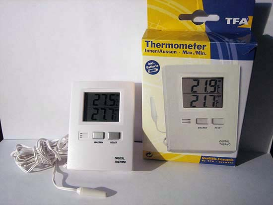
Term�metro
con sonda de cable TFA, modelo 30.1012 (Mar�a-Jos� Navarro).
2.4 Termohigr�metro
Adem�s he introducido un peque�o termohigr�metro encima del sustrato
para controlar, sobre todo, la humedad de la zona pr�xima al animal.
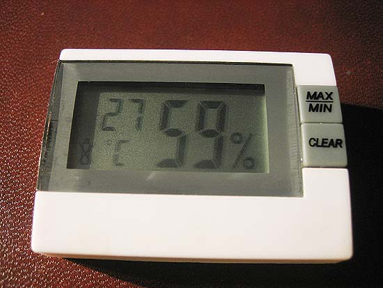
Peque�o termohigr�metro digital sin sonda (Mar�a-Jos� Navarro).
2.5 Recipiente para la tortuga
Para este procedimiento no hace falta una caja mucho m�s grande que la
tortuga, ni doble caja con aislamiento, porque se supone que en la
nevera la temperatura ya ser� correcta. Siguiendo los pasos de Josep
Vicen�, escog� la caja del tama�o adecuado para meter, debajo de la
tortuga, un "acumulador de fr�o".
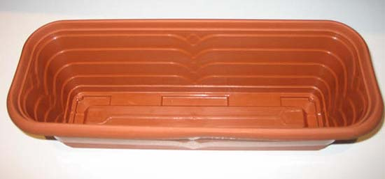
Recipiente (Mar�a-Jos� Navarro).
He
elegido un recipiente alargado, donde cab�a la tortuga, y que se
adaptaba perfectamente al espacio disponible en la parte baja. Una
jardinera de pl�stico que encajaba en las ranuras de la bandeja de la
nevera, permitiendo que la propia bandeja hiciera de improvisada tapa.
Dentro he puesto un acumulador de fr�o. El resto de la nevera la dej�
vac�a.
2.6 Acumulador de fr�o
Acumulador de fr�o (Mar�a-Jos� Navarro).
Son
recipientes herm�ticos de pl�stico llenos de un gel de elevado calor
espec�fico que varia muy lentamente de temperatura. Se emplean para
acampadas y para el transporte de medicamentos que requieren
refrigeraci�n. La idea es que as� la tortuga no note los peque�os
cambios de temperatura que se dan en la nevera, a causa de la
diferencia entre los niveles de encendido y apagado del termostato.
2.7 Tubos de pl�stico.
|
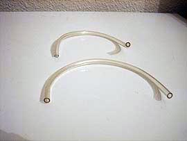
Tubos de
aireaci�n (Mar�a-Jos� Navarro). |
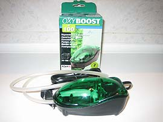
Bomba de
aireaci�n (Mar�a-Jos� Navarro). |
Para
romper el hermetismo de la nevera, coloqu� dos tubitos de pl�stico de
peque�o calibre, mitad dentro mitad fuera, para que pueda circular
algo de aire, aunque se ventile la nevera cada d�a medio minuto por la
ma�ana y por la noche.
2.8 Bomba de aireaci�n.
He utilizado el OXYBOOST� AP100 de la casa Aquael. Es un peque�o
compresor, del tama�o y forma de un rat�n de ordenador, que inyecta
aire, mediante un tubito fino. Es de los usadas para de aireaci�n de
acuarios. Es un invento barato (11 �), que proporciona una cierta
tranquilidad, al saber que no va a faltar aire en el interior de la
nevera.
2.9 Programador para la bomba de aireaci�n.
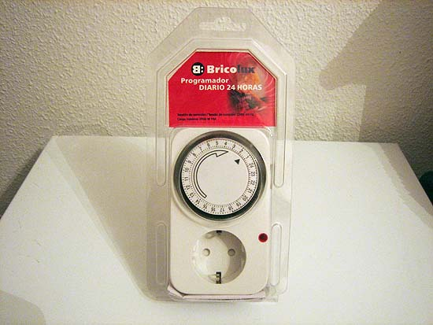
Programador (Mar�a-Jos� Navarro).
He
utilizado un temporizador mec�nico simple, de los que se venden en
ferreter�as, que consta de una rueda horaria, rodeada de peque�as
pesta�as, que puedes levantar individualmente para activar la salida.
Pongo una pesta�a levantada, que corresponde a 15 minutos de
funcionamiento, cada 6 horas. Es decir, se conecta cuatro veces al
d�a. Tiene la ventaja de que proporciona una cierta tranquilidad el
d�a que no se puede estar en casa para abrir y ventilar la nevera.
2.10 Substrato.
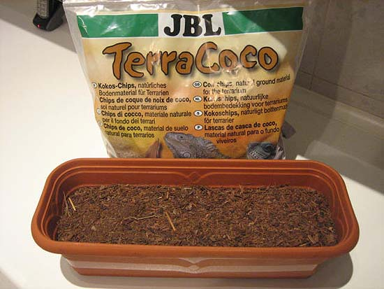
Substrato (Mar�a-Jos� Navarro).
Highfield recomienda poner tierra o turba como substrato en la caja de
hibernaci�n. El motivo es que sin el substrato, a�n a 5�C, las
tortugas se mueven mucho, pues tienen la tendencia refleja a
enterrarse. Poniendo un poco de substrato para que se puedan
semienterrar, parece que dejan de moverse. El substrato conviene
esterilizarlo antes.
He probado dos tipos de sustrato: corteza de coco triturada, del tipo
de la que tiene en su terrario, y papel de cocina en la base y tiras finas
de papel encima. Luego explicar� el porqu�.
3. PROCEDIMIENTO
3.1 Desinfecci�n y/o esterilizaci�n
Como ya hemos se�alado, todos los utensilios que van a estar dentro de
la nevera, y la nevera misma, deber�n estar lo m�s desinfectados o
est�riles posible, dado que una nevera, por sus propias
caracter�sticas, es un medio id�neo para la proliferaci�n de hongos,
que hay que evitar a toda costa.
La superficie interior de la nevera, el recipiente que iba a contener
a la tortuga y el acumulador de fr�o, los lav� con jab�n quir�rgico (Betadine�
scrub).
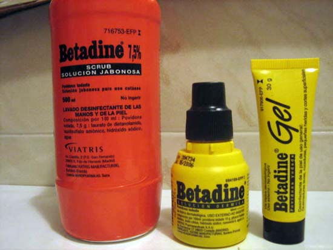
Tres productos desinfectantes de la casa Betadine�. El jab�n (Betadine�
scrub, envase rojo) y el desinfectante para heridas l�quido y en forma
de gel (amarillos) (Mar�a-Jos� Navarro).
He
cocido en una olla con agua hirviendo durante 20 minutos la corteza de
coco que iba a usar como substrato, la he escurrido lo m�s posible en
un colador y la he dejado secar durante un tiempo en el horno a
temperatura suave. Aunque hay otras formas de esterilizarlo, la
cocci�n en agua hirviendo tiene la ventaja de que adem�s disolver�
bastante bien los posibles abonos qu�micos, conservantes u otros
aditivos, que se hayan podido a�adir al substrato (la solubilidad de
nitratos, fosfatos, etc, aumenta considerablemente al aumentar la
temperatura). Una vez seco el substrato, trituro la corteza en un
molinillo para facilitar que el animal pueda enterrarse mejor.
El resultado ha sido bueno, en el sentido de que no ha aparecido ni
rastro de moho de ning�n tipo, tras seis semanas de hibernaci�n.
3.2 Procedimiento de calibrado y conexi�n del termostato.
Como el proceso de preparaci�n del animal durar� casi un mes antes de
que est� dormido del todo y listo para el "frigo", hay tiempo de hacer
las mediciones de temperatura y humedad de la nevera.
Con la neverita limpia, desinfectada, reci�n descongelada y totalmente
vac�a, comienzo por medir la temperatura usando el propio termostato
interno de la nevera. En la bandeja intermedia con el termostato al
m�nimo (en 1 de 7) -que no consigue congelar los cubitos-, la temperatura son 5-6 grados y la humedad va de
71-74% (m�ximo y m�nimo de 24 horas). Sigo tomando m�s mediciones de
la temperatura que hay en la parte m�s baja. Pero la temperatura
oscila, porque estos termostatos internos de las neveras no son muy
precisos. De manera que, para mantener la estabilidad que necesitamos,
la soluci�n est� en no confiar plenamente en el termostato de la
nevera y conectarla mediante un termostato externo, tal como sugiere Highfield (2002, p�g. 54).
Con el fin de conocer el grado de precisi�n de nuestros instrumentos
de medici�n, procedemos a calibrar el termostato externo con sonda y
el term�metro con sonda. Para ello, medimos los cero grados. Se hace
congelando "cubitos" hechos con agua destilada y despu�s dej�ndolos
fundir en un recipiente, hasta que tengamos bastante agua l�quida,
pero quedando a�n hielo por fundir. Eso ser�n los cero grados. Se
remueve bien y se mide lo que marca ah� el termostato y el term�metro,
introduciendo ambas sondas en esa agua durante 3-4 minutos.
En este proceso, hay que tomar las siguientes precauciones:
- Que el recipiente donde se realice (en nuestro caso, un vaso) sea
suficientemente profundo y que el volumen de agua con cubitos sea el
adecuado para que las sondas puedan sumergirse totalmente.
- Remover bien el agua con los cubitos para que se homogenice la
temperatura en todo el l�quido
- Que las sondas no toquen con el cristal del vaso, ni entre s�.
- Que la temperatura de la habitaci�n donde se realice la calibraci�n,
no sea demasiado alta, o bien realizar la prueba introduciendo el
recipiente con las sondas en la nevera.
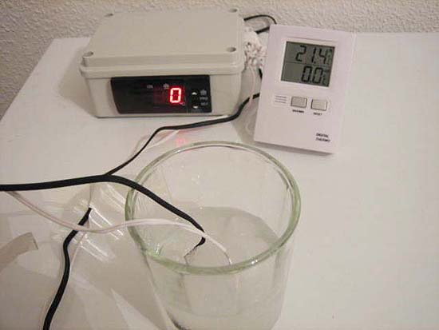
Calibrado a cero grados (Mar�a-Jos� Navarro).
Durante la hibernaci�n, hay que tener en cuenta esta medida obtenida
en la calibraci�n, sobre todo, si marca algo por encima o por debajo
de cero, para saber la temperatura real a la que est� el animal y
poder asegurarnos que no nos acercamos demasiado al punto de
congelaci�n.
Si el term�metro y el termostato marcan lo mismo, ya es buena se�al.
Por otra parte tambi�n es normal que no marquen exactamente cero, si
se han calibrado para temperatura ambiente alta. Adem�s los m�rgenes
de tolerancia con el que se fabrican las sondas, son de alrededor de
un grado, de modo que puede haber diferencias de lectura de hasta un
grado entre dos sondas, en teor�a id�nticas. Simplemente es cuesti�n
de saber, con la calibraci�n casera en hielo, si una determinada sonda
marca m�s o menos de lo correcto. A partir de ah�, se puede tener
siempre en cuenta esa diferencia para tener una buena idea de la
temperatura real, si nos movemos dentro de un rango de temperaturas
cercano al cero. En nuestro caso marcaron ambas los 0�C.
Una vez comprobada la fiabilidad de termostato y term�metro, conecto
el termostato externo con sonda descrito y enchufo la nevera a la
corriente a trav�s de ese termostato, poniendo el propio de la nevera
al m�ximo de fr�o, para que no se desconecte nunca la nevera, y sea el
termostato externo, mucho m�s preciso, como hemos visto, el que tenga
el control del encendido-apagado de la misma.
La sonda del termostato debe estar fuera del recipiente que contiene
al animal, midiendo la temperatura del aire de la nevera, pero a una
altura parecida a la caja de la tortuga, con el fin de que el
termostato reciba las fluctuaciones de temperatura lo antes posible
para encender o apagar el compresor. Dentro de la caja, la temperatura
cambia m�s lentamente que fuera, as� que el termostato tardar�a en
reaccionar y las fluctuaciones ser�an mayores.
Ponemos la sonda del term�metro en el interior de la caja de
hibernaci�n al lado del animal.
Para m�s seguridad, ponemos otro termohigr�metro dentro de la caja de
hibernaci�n cerca de la tortuga para comprobar que no haya demasiados
cambios bruscos y no nos salgamos de los par�metros de temperatura y
humedad.
Elegimos, por seguridad, que la temperatura de hibernaci�n sean 5�C en
el sustrato.
El termostato externo se ha puesto entre 4�/6�C, para no forzar el
compresor con demasiados encendidos y apagados. Esto quiere decir que
el termostato conectar� la nevera cuando la temperatura llegue a 6�C y
la apagar� cuando alcance los 4�C. Pero dentro del substrato la
fluctuaci�n es menor y m�s suave que en el resto de la nevera.
Lo m�s probable es que ese ajuste de programaci�n del termostato
consiga la temperatura de 5�C una vez colocado el sustrato. Y si no,
bastar�a con colocar la sonda del termostato un poco m�s arriba (m�s
cerca del congelador), para que se apague antes o bien regularlo a
temperatura un poco m�s alta. Hay que hacer pruebas en cada caso para
comprobarlo.
Lo peligroso son los picos muy bajos de temperatura que se dan cuando
la nevera funciona a tope para compensar si la temperatura ha subido
mucho. Por ejemplo, la primera vez que se ponga la tortuga, o cuando
se ha abierto demasiado rato (para comprobar su estado, pesarla, etc).
En esos momentos, la nevera funcionar� bastante rato a toda potencia,
el termostato se desconectar� al llegar a los 4�C, pero es posible que
la temperatura contin�e bajando todav�a un rato, pues el congelador
estar� muy fr�o. Eso se puede evitar poniendo al principio un ajuste
algo m�s alto (7 u 8�C), cuando sepamos que la nevera ha subido
demasiado de temperatura. Y una vez haya llegado al equilibrio, se
vuelve a ajustar a 4-6�C de manera manual. Se podr�a reducir la
diferencia entre punto de conexi�n y de desconexi�n, por ejemplo 5-6�C.
Un margen mayor, reduce las conexiones y desconexiones tan frecuentes
del compresor, con lo que protege la nevera a costa, eso s�, de unas
fluctuaciones de temperatura mayores. Se tratar�a de que transcurran
al menos un par de minutos de reposo entre el momento de desconexi�n
de la nevera y la siguiente conexi�n.
Conviene hacer mediciones de prueba durante varias semanas previas a
introducir al animal para comprobar que la temperatura del term�metro,
cuya sonda est� enterrada en el sustrato, no baje de 4�C para que no
se acerque demasiado al punto de congelaci�n, ni suba de 7�C para que
el animal no se despierte.
Es recomendable tener unos d�as para las comprobaciones de temperatura
con y sin bomba de aire y con dos o tres aperturas de nevera al d�a y
ver m�ximas y m�nimas en los dos term�metros.
3.3 Aireaci�n de la nevera.
Calculo que la neverita, tendr� una capacidad aproximada �til de unos
25 litros (aunque en el manual dice que son 48 litros), porque hay que
descontar lo que ocupa el compresor m�s unos 6 litros de la jardinera
con su sustrato. Por lo que quedar�an unos 19 litros para la
circulaci�n-almacenamiento del aire.
La pregunta que surge ahora es �cu�ntas veces al d�a se deber�a abrir
la puerta, como m�nimo, para renovar el aire?. Ya s� que esto no es
una ciencia exacta, pero como abrir la puerta implica modificar la
temperatura interior, dada la temperatura que tiene esa habitaci�n.
Pues he de buscar una soluci�n de compromiso, entre que no le falte el
aire y no sobrecargar el sistema, para evitar al m�ximo los picos.
Aunque quiz� no era necesario, he conectado una peque�a bomba de aire
al tubo de entrada, tal como recomienda Highfield en sus videos,
dejando los otros dos tubos como salida. La bomba no funciona de modo
continuo porque alterar�a demasiado la temperatura, sino que la he
conectado a un temporizador, programado para que se ponga en marcha 15
minutos cada 6 horas. Es decir, 4 veces al d�a, para quedarme m�s
tranquila si un d�a falto de casa muchas horas.
Aunque la tortuga hibernando consume muy poco ox�geno, tanto si lo
hace bajo tierra, en un fondo fangoso bajo el agua (tortugas
acu�ticas), o en nevera, es dif�cil saber cuanta
ventilaci�n es necesaria, probablemente muy poca. Siempre ser� m�s
seguro excederse ventilando m�s de la cuenta. Abrimos tres veces al
d�a, a pesar de todo.
|
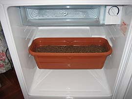
Jardinera en
nevera (Mar�a-Jos� Navarro). |
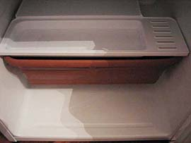
Tapa
(Mar�a-Jos� Navarro). |
|
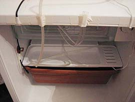
Instalada
(Mar�a-Jos� Navarro). |
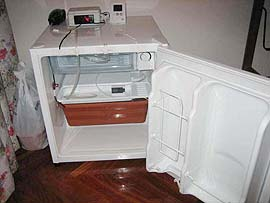
Todo conectado
(Mar�a-Jos� Navarro). |
Cierto
que cuando se abre, cambia la temperatura, pero si se abre poco tiempo
no es problema. Todo el recinto de la nevera est� fri� y el compresor
se pondr� en marcha en seguida para enfriar el nuevo aire que ha
entrado. La tortuga, dentro de su recipiente con el acumulador de fri�
y el substrato, no lo notar�.
Y en definitiva, basta con probarlo, para ver si la temperatura var�a
demasiado o no. Para eso tenemos una sonda dentro del
recipiente de la tortuga. Se puede ir viendo c�mo evolucionan las
temperaturas m�ximas y m�nimas. Si se notasen cambios importantes de
temperatura, no moment�neos, sino que durasen un cierto tiempo, cosa poco
probable, se podr�a reducir la entrada de aire, pero mientras no pase
eso, puedo estar tranquila.
3.4 Preparativos del animal.
Para la hibernaci�n en nevera, deber� ponerse en marcha un
procedimiento similar al que seguir�a el animal en su medio natural.
Pero la diferencia est� en que en el medio natural, es la temperatura
y las horas de luz solar las que disparan autom�ticamente el mecanismo
instintivo de la hibernaci�n por parte del animal, mientras que en
este procedimiento artificial de la nevera, somos nosotros quienes
debemos ir preparando al animal y ayud�ndole a ir poco a poco entrando
en letargo.
La siguiente tabla recoge el procedimiento seguido y las fechas en que
se llevaron a cabo las acciones.
|
FECHAS |
ACCIONES |
| 14 de octubre.
Repetido el 28 de octubre. |
Desparasitaci�n con 16,5 mg de Panacur� y 16,5 mg.
de Flagyl� (La dosificaci�n es 100mg/Kg). |
|
21 de Noviembre de 2005. |
El proceso comienza, alejando la l�mpara PowerSun�, para
aumentar la distancia entre la l�mpara y la tortuga, para que la
temperatura del terrario no suba de 20-23�C, que es la de la
habitaci�n, y disminuyendo las horas que la l�mpara permanece
encendida. El animal se sigue poniendo en el punto donde esta la
PowerSun�, aunque �sta est� demasiado alta para calentarle. Pasa
cada vez m�s tiempo enterrado o metido en su cueva, pero sale a
pasear. |
|
24 de noviembre. |
Su �ltima comida. Fer pesa ahora 190 gr y mide 8,9
cm de plastr�n. Tiene 14 meses de vida. Le doy largos ba�os tibios
diarios con el fin de hidratarle y ayudarle a evacuar. |
|
Del 25 al 30 de noviembre. |
Se va aletargando poco a poco, permanece mucho
tiempo escondido o enterrado pero sale a diario a ponerse debajo
de la PowerSun�, aunque no le calienta, y a caminar un ratito. Sigo
con ba�os tibios diarios. |
|
1 de diciembre. |
Le saco del terrario y le paso a una caja
prehibernaci�n sin l�mpara PowerSun� , con un sustrato de papel de cocina y
toda llena de tiras finas de papel para que el animal pueda
�enterrarse si lo desea� y tener controlada defecaci�n y micci�n.
Sit�o la caja en una peque�a habitaci�n que no tiene calefacci�n,
tiene una luz tenue y puedo ir bajando la temperatura (abriendo
m�s o menos una ventana) de 20� a 10� a raz�n de 1�C al d�a de
descenso. Sigo con ba�os tibios, pero ahora cada 3 d�as para no
despertarle tanto, controlando que beba, sec�ndole muy bien antes
de devolverle a su caja. |
|
10 de diciembre. |
�ltima evacuaci�n. |
|
Del 11 al 18 de diciembre. |
Le mantengo entre 8-9�C. Est� totalmente dormido.
Ba�os de agua a la misma temperatura ambiente cada 3 d�as para no
despertarle demasiado. |
|
18 diciembre. |
�ltimo ba�o e introduzco en la nevera a 5�C
programada de 4-6�C. Pesa 165 gr |
3.5
Introducci�n de la tortuga en la nevera.
18 de diciembre. 10h. �Primer intento de nevera fallido!
El animal estaba dormido. Le doy el �ltimo ba�o con el agua a
temperatura ambiente (25 minutos) para hidratarle antes de meterle en
la nevera. Se despierta, como es natural. Le devuelvo a su caja cerca
de la ventana abierta (a 8-9�C). Espero dos horas. El animal tiene los
ojos cerrados. Le supongo dormido.
Le saco y le llevo a la nevera. Le entierro yo en el sustrato. Cierro
la nevera y al poco rato le oigo escarbar. Abro. Se hab�a despertado y
luchaba por salir de all�. Hab�a esparcido el sustrato por toda la
nevera. Esto se podr�a haber evitado usando una caja con tapa de
cierre herm�tico, perforada para permitir la aireaci�n.
Le he devuelto a su caja y a la habitaci�n de prehibernaci�n, mientras
que desconecto y limpio toda la nevera y el suelo. Tengo que esperar
4-5 horas para volver a poner la nevera a la temperatura adecuada y
para que la tortuga se duerma nuevamente. La causa del fracaso
seguramente ha sido la temperatura de 23�C de la habitaci�n donde est�
situada la nevera y el tiempo excesivo invertido en los preparativos.
Segundo intento: 18 de diciembre 17 horas.

Segundo intento (Mar�a-Jos� Navarro).
Como
no hab�a tiempo de volver a cocer, secar y enfriar nuevo substrato y
el usado podr�a estar ya contaminado, introduje un cambio,
sustituyendo la corteza de coco por varias hojas de papel de cocina y
lleno el recipiente de tiras de papel, lo que facilita y hace m�s
limpio los controles del animal. Highfield menciona tambi�n, como
posibilidad de sustrato, las tiras de papel, aunque aconseja la
tierra, para ayudar a que el animal no se deshidrate. En nuestro caso,
se ha controlado muy rigurosamente la humedad del recipiente y una
posible p�rdida de fluidos de la tortuga, para detectar y actuar ante
una posible evidencia de deshidrataci�n.
�Por fin! est� dormido en la nevera a unos 5�C. La primera noche est�
entre 5,6 y 6,4�C y 70% de humedad, lo que parecen ser buenos
par�metros, as� que de momento no toco nada. Lo reviso todo m�s veces
estos primeros d�as (a�n a riesgo de alterar algo su temperatura) para
quedarme m�s tranquila. Creo que est� todo m�s o menos controlado
���espero que mi Fer tenga unos felices sue�os!!!.
3.6 Controles semanales durante el proceso.
La revisi�n y el pesaje del animal deben hacerse r�pido con el fin de
no despertarle y no alterar demasiado la temperatura del interior de
la nevera. La tabla siguiente recoge los controles realizados. Durante
la tercera semana observamos una disminuci�n de la humedad, que
afrontamos introduciendo un recipiente con agua en el suelo de la
nevera y vigilando y a�adiendo agua al mismo en los siguientes
controles semanales, lo que aument� de nuevo la humedad.
|
SEMANAS |
TEMPERATURA |
HUMEDAD |
PESO |
|
Primera |
M�n 4,7. M�x 7 |
65% |
164 gr |
|
Segunda |
M�n 5,2 M�x 6,8 |
65 % |
164 gr |
|
Tercera |
M�n 5,2 M�x 5,8 |
60% (pongo un recipiente con agua en el suelo de la
nevera para aumentar la humedad) |
164 gr |
|
Cuarta |
M�n 4,9 M�x 5,9 |
65% |
163 gr |
|
Quinta |
M�n 4,8 m�x 6,2 |
68% |
163 gr |
|
Sexta |
M�n 4,9, m�x 5,8 |
68% |
163 gr |
3.7 Salida de la hibernaci�n.
As� como el proceso de preparaci�n es lento y debemos permitir que el
animal vaya acondicionando su cuerpo, ralentizando su metabolismo y
durmiendo poco a poco, el proceso de salida de la hibernaci�n debe ser
r�pido, para conseguir que el animal se caliente, se active y comience
a beber y a comer lo antes posible., para que limpie pronto sus
ri�ones de las toxinas acumuladas durante la hibernaci�n y recupere el
peso perdido.
Le saco el 28 de enero a las 6 semanas (menos un d�a, �porque ten�a
tantas ganas de verle!) con un peso de 163 gr. Le dejo a temperatura
ambiente (23�C) para que se vaya despertando y a los 10 minutos
empieza a moverse y a abrir los ojos.
|
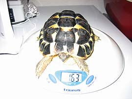
Peso al salir
(Mar�a-Jos� Navarro). |
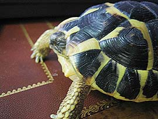
A�n con los
ojos cerrados (Mar�a-Jos� Navarro). |
Le
doy un ba�o de agua tibia con dos gotas de Dayamineral� (un complejo
vitam�nico para beb�s) de 25 minutos para hidratarle. El animal bebe.
Despu�s de ba�arla pasa ya 166 gr.
La pongo en el terrario bajo la l�mpara PowerSun� (30�C) se calienta 10
minutos, pasea y olisquea su terrario. Se acerca a su comedero.
Le ofrezco can�nigos, lechuga (para ayudar a la hidrataci�n) y
escarola espolvoreada de fibra, calcio y vitaminas (una pizca de
Multicentrum�). Para mi sorpresa, se pone a comer normalmente a los 45
minutos de salir de la nevera, �una pasada, que me llena de emoci�n!.
Al final del d�a, pesaba ya 170 gr y su salud, tras la revisi�n,
parece perfecta.
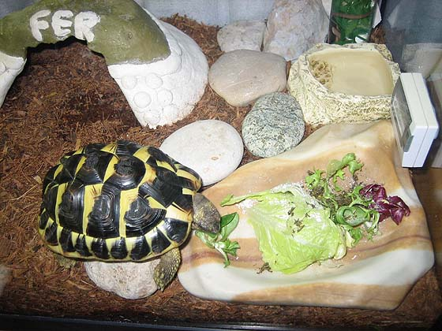
Comiendo a los 45 minutos de salir de la nevera (Mar�a-Jos� Navarro).
4.
CONCLUSIONES.
Salvo las peque�as incidencias que se han comentado, se puede decir
que mi experiencia de hibernaci�n en nevera ha terminado felizmente,
permitiendo que la tortuga hiberne en unos par�metros seguros de
humedad y temperatura, a pesar de las condiciones poco adecuadas para
la hibernaci�n que presenta la vivienda. Durante el proceso
preparatorio previo a la introducci�n en la nevera, el animal perdi�
25 gr y durante las seis semanas de hibernaci�n perdi� solamente 2 gr.
m�s. El estado de salud es perfecto, no apreci�ndose ning�n s�ntoma en
ojos, narinas, patas y caparaz�n, lo cual convierte esta experiencia
en un �xito.
[1]
En algunos pa�ses, como M�xico, a la nevera o frigor�fico se denomina
�refigerador�. Nunca hay que confundirlo con el congelador. La
temperatura �ptima de hibernaci�n se estima en 5�C, que permite la
ralentizaci�n del metabolismo sin acercarse demasiado al punto de
congelaci�n.
5. BIBLIOGRAF�A.
Bradley, K.
Notes on Refrigerator Hibernation for Mediterranean Tortoises with
temperature and weight graphs.
Highfield, A. C. (2002) Practical Encyclopedia of Keeping and
Breeding tortoises and Fresh Water Turtles. Carapace press. London.
England. Segunda edici�n.
Highfield, A.C.
Refrigerator Hibernation for Tortoises & Turtles.
Safer Hibernation & Your Tortoise Basic guide to hibernation safety.
Our original video showing how to hibernate your tortoise in complete
safety DVD Carapace Press.
Safer Hibernation Supplement Juvenile and American Box Turtle
Hibernation Designed to show how to hibernate young tortoises and
American box turtles safely. DVD. Carapace Press.
Agradecimientos:
Mi m�s sincero agradecimiento, y el de mi peque�o Fer, a Josep Vicen�,
Marcos y Frank-Jos�, por su insustituible ayuda t�cnica en el control
de los instrumentos de medida. Y a A�da, Gin�s, Fernando, Salva, Klara,
Marcelo y Txema, que han soportado con paciencia mis nervios durante
el proceso y han contribuido con sus sugerencias a resolver mis dudas
para que esta experiencia tuviera �xito.
|